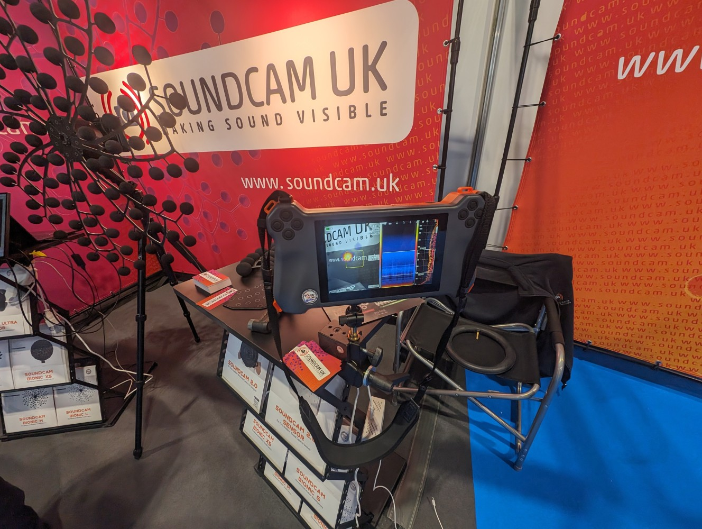
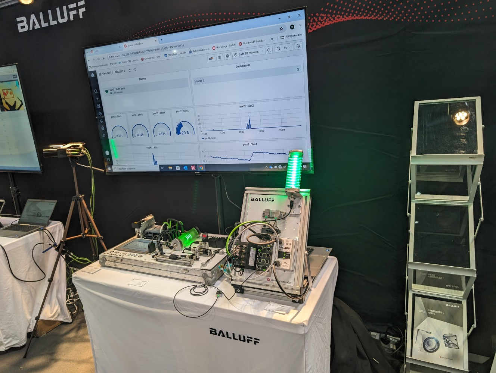
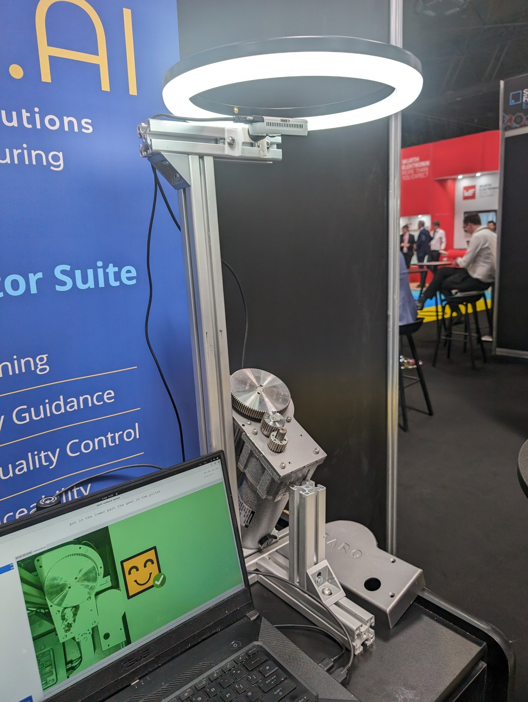

First time out of the office in a while but I’ve finally managed to escape to Smart manufacturing expo 2024. I think its been since covid, and after that there is a lot of changes happening in the business that meant I was tied to my desk.
A quick some up of the the event, there more mature IOT solutions, lots of ERP type information systems (apparently lots of companies still using spreadsheets in 2024!) and more Robotics. Heres a video of some of the more visually appealing parts of the conference.
Anyways, this is a quick recap of interesting things I’ve seen at the event. Sometimes Industry 4 linked and sometimes a little more distance to my day job. Here’s a quick rundown of new things I’ve found interesting I thought was worth sharing.
First on the list and the one I’m most excited by is looking at the un-discovered world using sound waves. I’ve seen this tech before but never in a finished product you can buy. They have multiple devices, the one I’m going to write about today is a handheld device that you can point at objects and it will measure sound waves and over the lay it on a camera (a normal RGB camera) so you can see any objects emitting sound, it just changes the pixels omitting sound to a red colour. you can now see sounds. It helps detect leaks in compressed air but it could be anything like a motor, faulty ball bearing on a motor fan ect or anything that emits a sound. The products website is https://www.acoustic-camera-uk.com/ and https://www.linkedin.com/in/ricardo-s-78aa032b/

Cyberweld - Tinsley Bridge has got some experience in robot welders and although the demonstrated robot arm is not as big, this robot does look capable piece of equipment and I think one of the main selling points is how easy it is to program. The engineer programmed it while i was chatting in 5 minutes. It looks a good product and easy to implement. https:/www.cyberweld.co.uk/about
Cranfield offering robotics apprenticeships, apparently a UK first. I was chatting with one of the lectures and sounds like the UK is in good hands in robotics at https://www.cranfield.ac.uk/.
Mission engineering sell microscopes for inspection and measurements. The stand out product they displayed were 3d inspections for looking at parts in 3d zoom in 1000x and more. Quite useful in certain applications like electronics.
Synsapse innovation. I had a good talk to these guys, mainly chatting about AI and genetic algorithms working together with IOT and information systems.
Balluff A IOT supplier of parts with support but without subscriptions. They offer unique sensors and automating using IOT. I had a good conversation with the well informed sales engineer Andrew Blears

Cambridge university are offering FREE IOT solutions to help monitoring your factory. They can measure temperature, air quality, downtime capture, job tracking and a SMDH MultiSense. This is linked to the industry4 on a shoe string. https://smdh.uk/sensor-solutions#Form
Dafo.ai is the training software that watches what you do and suggest corrections to any changes. For example, if your assembling components and screw on a bolt the wrong way then will inform you. It will also guide you through the assembling through its training mode.

Bussroot from output.industries - This is a short interveiw from the makers of Busroot who make IOT hardware to help understand whats happening in manufacturing enviroments.
Thats my take folks.